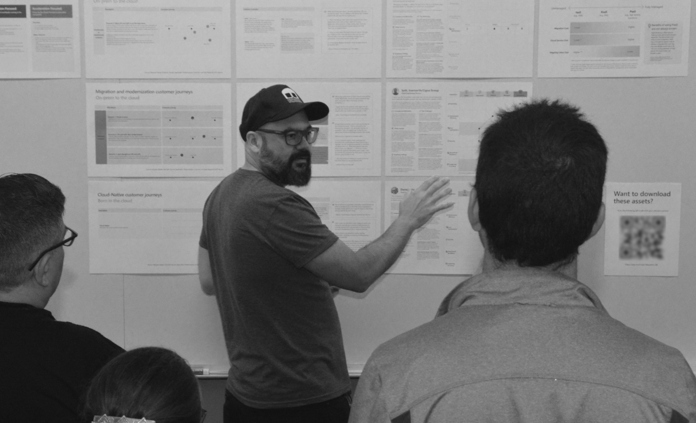

Understand problems → Turn insight into product direction → Design & prototype → Validate and iterate
I focus on shaping product design through research-driven insights and close collaboration with design, product, and engineering teams. My hands-on industry expertise is primarily in UX research, complemented by design experience from academic and personal projects. Much of my work has focused on complex technical domains such as cloud and AI developer platforms, where understanding workflows, mental models, and organizational constraints is essential to improving the user experience.
Much of my work involves confidential information, so I cannot publicly share detailed case studies. Instead, this page outlines how I typically approach research, design, and product decision-making.

My work is deeply rooted in cross-functional collaboration. When design, product, engineering, and research work together to frame a problem, teams are more likely to align on what should be built and why.
To understand the problem space, I use a mix of methods depending on the stage of the product: telemetry analysis, interviews, surveys, workflow walkthroughs, and jobs-to-be-done analysis. Design workshops are often useful to align stakeholders and explore solution spaces collaboratively.
Research and discovery are only valuable if they lead to better product decisions. After synthesizing insights, I work with design, product, and engineering partners to identify opportunity areas and define what should change in the product or what new capabilities we want to introduce. This often involves mapping insights to product capabilities, prioritizing improvements, and developing models to create alignment on the experience direction before detailed design begins.
As potential solutions emerge, early designs and prototypes are validated with users to build confidence in the direction. Methods such as design reviews, usability testing, and heuristic evaluations help identify friction early and ensure solutions address real customer problems while aligning with product and business goals.
Once designs are implemented, the feedback loop continues. Usability studies, in-product surveys, telemetry analysis, and preview programs help evaluate whether the product is solving the intended problems.
I encourage product and design teams to observe research sessions whenever possible. Direct exposure to users builds empathy and often accelerates decision-making as teams see firsthand where workflows break down or where new opportunities emerge.